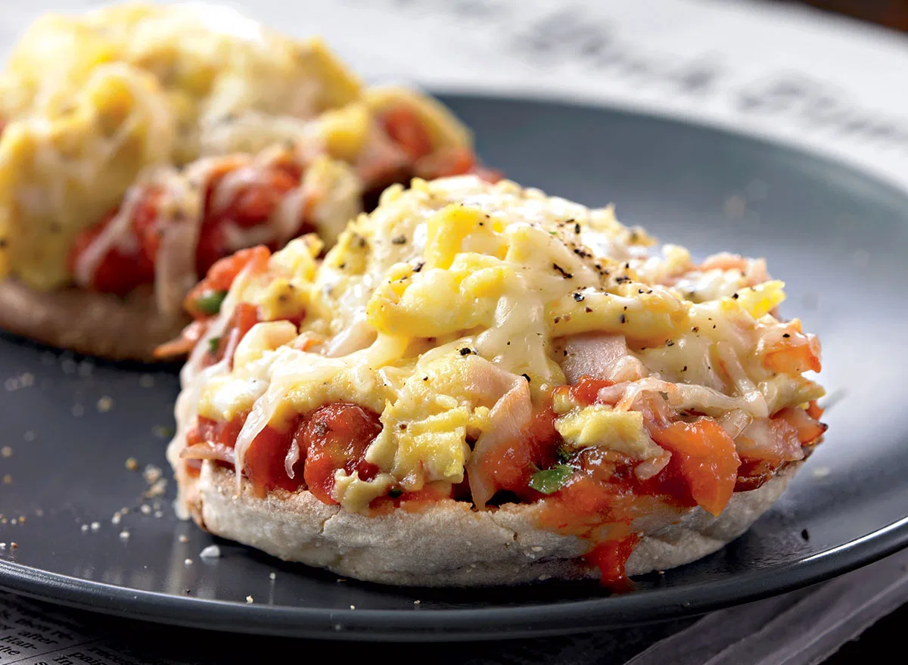

Breakfast Pizza

Description
Start with the ultimate breakfast bread—the fiber-dense whole-wheat English muffin—as your base and salsa as
your sauce, then add eggs, ham, and cheese for flavor, substance, and plenty of protein.
Protein Payout: 30 grams
Ingredients
- 6 Eggs, beaten
- 4 oz Ham, cut into thin strips
- Whole wheat English muffins, split and toasted
- 1 cup prepared Salsa
- 1/2 Tbsp Butter
- 1 cup shredded Low-fat jack or cheddar cheese
Steps
- Preheat the boiler
- Heat the butter in a large nonstick pan
- When the butter is fully melted, season the eggs with salt and pepper, then add to the pan, along with the ham strips.
- Cook, using a wodden spoon or rubber spatula to keep stirring the eggs as they set
- Remove the pan from the heat about 30 seconds before the eggs are fully done (they'll continue to cook in the pan and in the oven).
- Slather each English muffin half with a good spoonful of salsa.
- Divide the eggs among the English muffins, then top with the cheese
- Place all the English muffins on a baking sheet and broil (6" from the heat is ideal) until the cheese is fully melted and browned around the edges.
Black Bean Omelet
Smoked Salmon Sandwich